Nutrition
Nutrition
when we all hear the word, "Nutrition" the thing that pop-ups
into our heads mostly is The Food Pyramid;
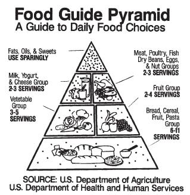
But scientifically it is "The term nutrition refers to the sum
total of all the processes by which an organism takes in
and makes
use of the foods it needs to survive, grow, move, and develop.
The word nutrition is also used to refer to
the study of the substances
an organism needs in order to survive.
Those substances are known as nutrients."
we can divide the nutrients to five major classes
of nutrients are carbohydrates,
proteins, lipids (or fats), vitamins, and minerals.
a little dictionary
Amino acid:All amino acid molecules include a carboxyl group is a functional group consisting
of a carbon atom double-bonded to an oxygen atom and single-bonded to a hydroxyl (-OH) group,
a
s indicated by the structure drawn on the right. Carboxyl groups are weakly acidic and are the characteristic
constituents of carboxylic acids. They are present in most organic acids, and are biodegradable. And Amino means there is an -NH2 group.
Macronutrients:A nutrient needed in large amounts, There are three macronutrients required by humans: carbohydrates (sugar),
lipids (fats), and proteins. Each of these macronutrients provides energy in the form of calories.
Micronutrients:A nutrient needed in small amounts.For example, vitamins, and minerals
Carbohydrate:Carbohydrates are neutral compounds made of carbon, hydrogen, and oxygen. Carbohydrates form chains of repeating units
Monosaccharides are the base units of carbohydrates. Glucose is the most important monosaccharide in human nutrition,
because it is the body's primary source of fuel and the only way the brain can obtain energy.
Food pyramid: A diagram developed by the U.S. Department of Agriculture
that illustrates the relative amounts of various nutrients needed for normal human growth and development.
Lipid:(fat) have the highest energy content per gram of the macronutrients.
They are an excellent way to store energy long term. Lipids are water-insoluble(they do not dissolve in water
and, in this case, float in water), so they are transported through the bloodstream by lipoproteins.
Protein:are made of amino acids and account for about 15% of body mass (the second largest component after water).
Vitamins and minerals. Vitamins and minerals are substances needed by the body in only very small amounts.
They are also substances that the body cannot produce itself.
CAN YOU READ THE LAPELS?
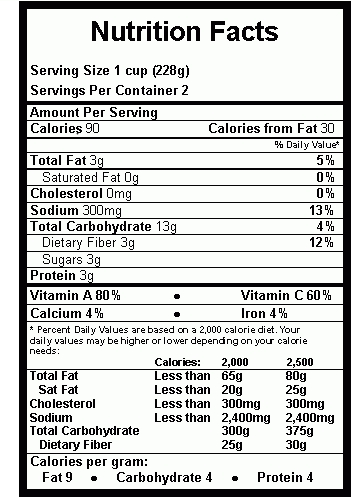
Click the picture
Groceries
nothing comes in a spoon, you should always go and grab things yourself. it is actually get the vibe to make it something
So here is some great tips, you should know for
We stacked up the information in basic three catagories:
Groceries list for losing weight
More OUT than IN over time = weight loss
Here is grocery list helps you to lose weight in a healthy way:
Groceries list for losing weight
This is a Sample The Food The Reason Why The Nutrition Facts Spaghetti Squash 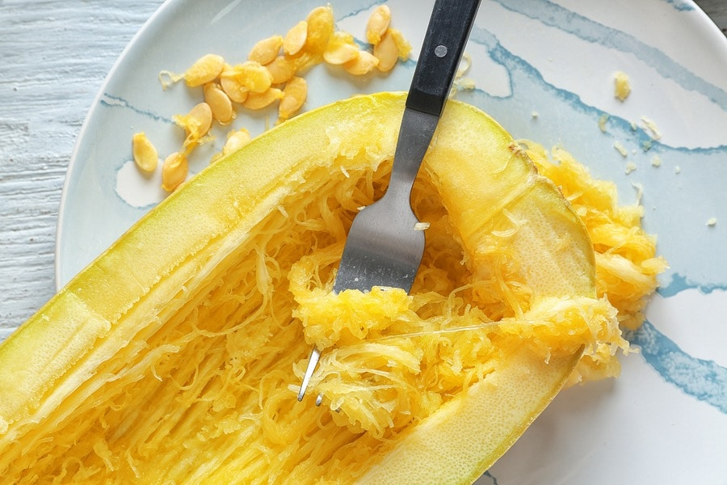 it only about 40 calories per cup
and it is an excellent source of vitamin A and potassium.
Oatmeal 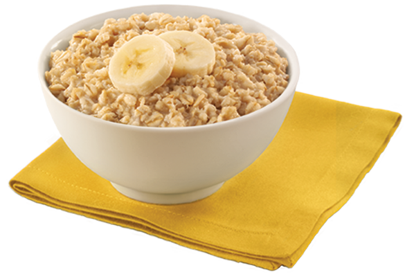 according to a study in the Annals of Nutrition
and Metabolism, scientists found that having oatmeal for breakfast
resulted in greater fullness, lower hunger ratings, and fewer calories
eaten at the next meal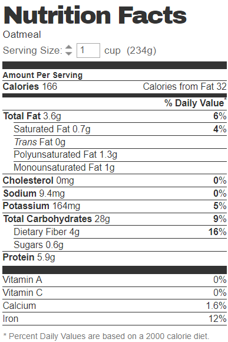 eggs 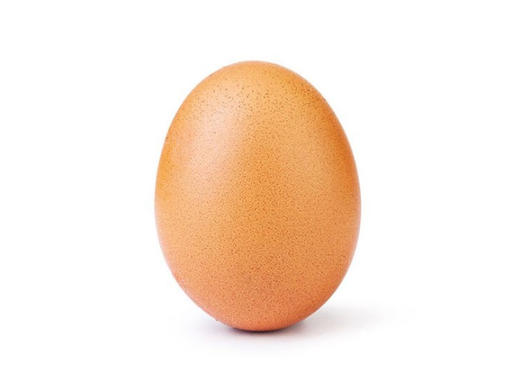 a study from Nutrition Research showed that
eating eggs for breakfast can make you feel more full
and help you eat fewer calories throughout the day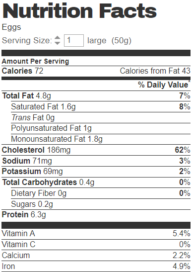 Sweet Potato 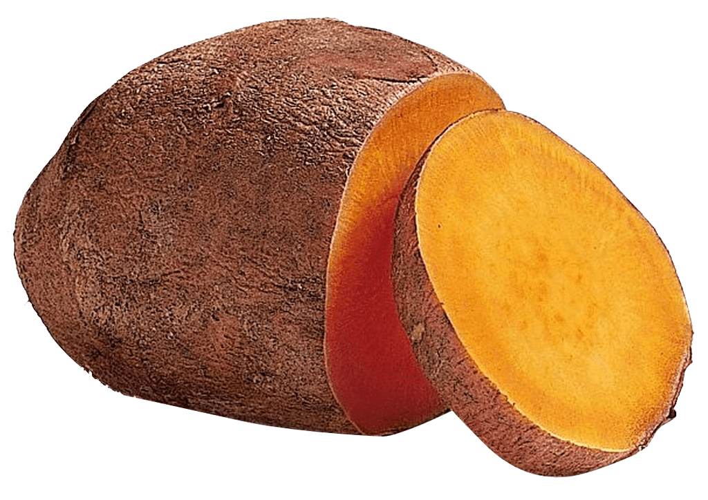 A large sweet potato contains around 4 grams
of satiety-boosting protein, 25 percent of the days
belly-filling fiber, and 11 times the recommended daily
intake of vitamin A. What is more? It is less than 200 calories.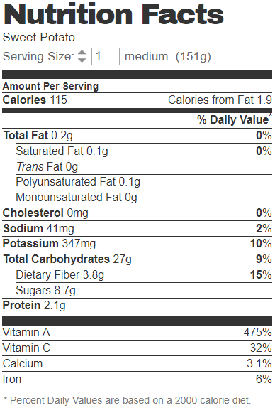 Groceries list for gaining weight
More IN than OUT over time = weight gain
Here is grocery list helps you to gain weight in a healthy way:
Groceries list for gaining weight
This is a Sample food name the reason why the nutrition facts Red meat 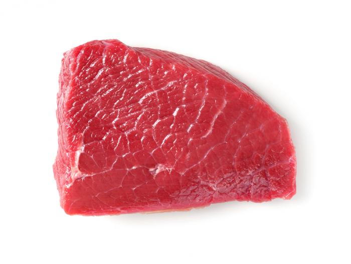 Red meat is an excellent source of protein1
that will help you gain muscle. It contains
leucine, an amino acid that helps stimulate
muscle protein synthesis. The fattier the meat,
the more calories you will take in.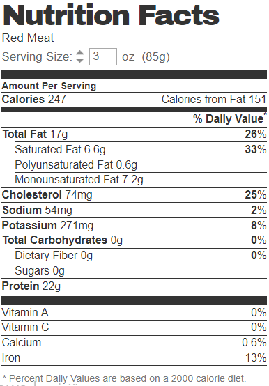 Nuts 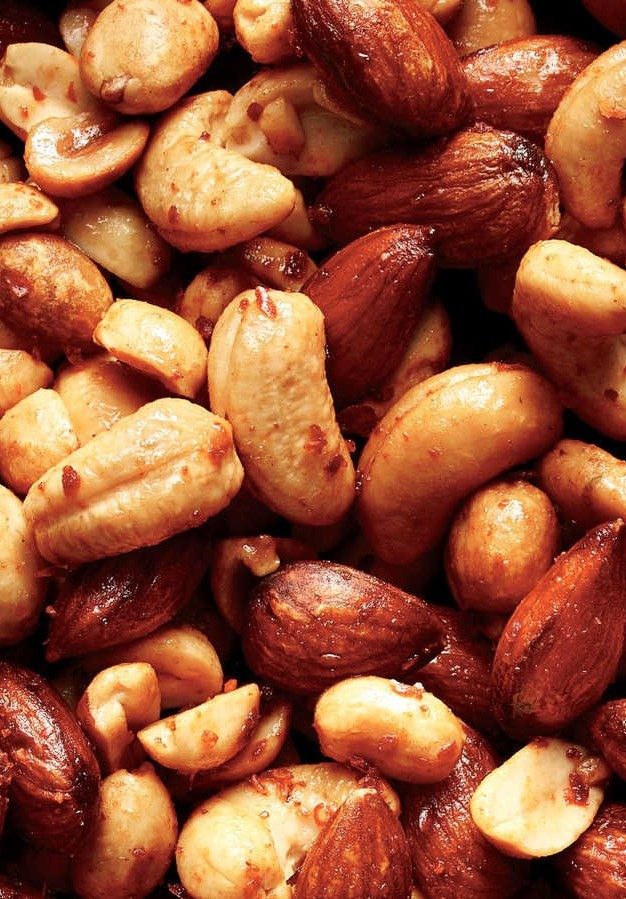 Nuts and nut butters are a perfect choice
if you're looking to gain weight.
Just one small handful of almonds contains
over 7 grams of protein and 18 grams of healthy fats.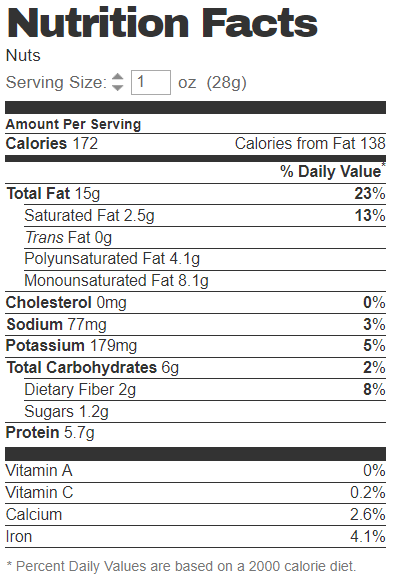 Rice 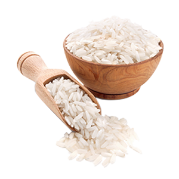 Rice is a great source of carbs that are
easy to consume and digest. However, some types
of rice are high in arsenic.
Milk 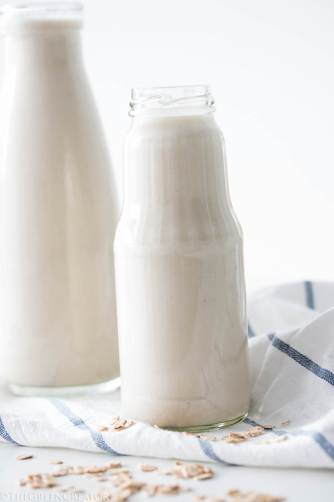 It provides a good balance of proteins,
carbs and fats and is a good source of calcium,
and it provides both casein and whey proteins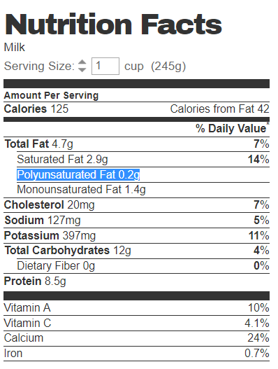 Nutrition Tips
Nutrition Tips to Lose Weight
- Drink Water, Especially Before Meals
- Eat Eggs For Breakfast
- Drink Coffee (Preferably Black)
- Drink Green Tea
- Cut Back on Added Sugar
- Eat Less Refined Carbs
- Use Smaller Plates
- Exercise Portion Control or Count Calories
- Keep Healthy Food Around in Case You Get Hungry
- Lift Weights
- Do Aerobic Exercise
- Eat More Vegetables and Fruits
- Chew More Slowly
- Get Good Sleep
- Beat Your Food Addiction
- Eat More Protein
- Supplement With Whey Protein
- Supplement With Whey Protein
- Eat Whole Foods (Real Food)
- Don't Diet — Eat Healthy Instead
Nutrition Tips to Gain Weight
- Add Healthy Calories
- Get plenty of sleep
- snack Away
- Eat mini-meals
- Get plenty of sleep
- Get your (healthy) snack on
- Eat More often
- Drink Milk
- use bigger plates
- Add cream to your coffee
- Eat your protein first and vegetables last
- High Proteins Along With Calories
- Keep A Food Journal
- Eliminate Stress
Nutrition Tips to Maintain Weight
- Build more lean muscle
- Fight off hunger with more filling foods
- Count calories
- Plan your meals in advance
- Consider adding minutes to your exercise plan
- Measure your portions
- Measure your portions
- Let your plate be your guide
- Eat breakfast
Meal Plans
Meals Plans for losing weight
Sample Menu (Meal Plan) Number One:
Breakfast
- One slice of whole grain toast with
one tablespoon almond butter - One hardboiled egg
- One orange
- One cup of plain coffee or tea
Lunch
- Two slices of whole grain bread,
two ounces sliced of roast beef,
one slice of Swiss cheese. - One-half cup sliced of carrots
- One cup of nonfat milk as a beverage
Dinner
- One three-ounce chicken breast fillet
with two tablespoons salsa - One cup of cooked broccoli with lemon juice
- One-half cup of cooked black beans
Snacks
- Several glasses of water
- Three-quarter cup of plain yogurt
with one tablespoon of honey - One-half cup blueberries
- One cup sweetened grapefruit juice
Nutrition Information
- Total calories: 1,498
- Total fat: 20.5 percent (35 grams)
- Total protein: 23 percent (89 grams)
- Total carbohydrates: 51.7
percent (201 grams) - Sodium: 1,934 milligrams
- Sugar: 87 grams
- Cholesterol: 295 mg
- Saturated fat: 6 grams
- Fiber: 32 grams
Sample Menu Number Two:
This menu is designed for people who need to
watch their sugar intake, including people with
diabetes and prediabetes. In place of sugar,
non-nutritive sweeteners are used.Breakfast
- One-cup of cooked oatmeal
with one-half ounce walnuts- One-cup of nonfat milk
- One half grapefruit
- One or two packets of
sucralose or stevia sweetener - A salad with one cup of spinach,
one ounce of feta, one-half cup cherry tomatoes,
and two tablespoons of balsamic vinegar (no oil) - Three ounces baked salmon (no oil)
- One-cup of nonfat milk
- Six ounces of peeled shrimp
with one small diced green pepper sautéed
in one tablespoon of olive oil and garlic - One cup cooked brown rice
- One small 100-percent whole
grain dinner roll - Water with a lemon or lime slice
- Two cups of air-popped popcorn (no butter)
- One apple
- One serving low-fat, sugar-free,
fruit-flavored yogurt - One cup strawberries
- Two-thirds cup raw baby
carrots with one ounce of fat-free dip - Several glasses of water with
slices of lemon or lime - Total calories: 1,496
- Total fat: 22.4 percent (37 grams)
- Total protein: 26.4
percent (99 grams) - Total carbohydrates:
51.3 percent (193 grams) - Sodium: 1,496 mg
- Sugar: 49 grams
- Cholesterol: 428 milligrams
- Saturated fat: 11 grams
- Fiber: 25 grams
- One cup oatmeal with one-half cup
reduced-fat milk and one-half cup raisins - One cup orange juice
- One cup black coffee
- One apple and 24 almonds
- Glass of water
- Sandwich with two large slices of
whole grain bread, four slices of lean turkey,
two tomato slices, lettuce, and mustard - 10-ounce glass of Full-fat milk
- One baked sweet potato with a pat of butter
- One protein bar
- Glass of water
- Fresh garden salad with three
tablespoons salad dressing - Six-ounce salmon filet
- One cup cooked spinach
- One-half cup mashed potatoes with butter
- milk or 100-percent fruit juice
- One whole wheat dinner roll
- One-half cup plain yogurt with
one-half cup sliced strawberries - Glass of water
- HealthLine: www.healthline.com
- 8fit: 8fit.com
- VeryWellFit: www.verywellfit.com
- NaturalBalanceFoods: www.naturalbalancefoods.com
- Nutritionix: www.nutritionix.com
- Science Clarified: www.scienceclarified.com
- Brilliant: brilliant.org
- chem.libretexts: chem.libretexts.org
- nhlbi.nih: www.nhlbi.nih.gov
- biggestloserresort: biggestloserresort.com